Process
How we build it, honestly — for collaborators who might join.
Where this is going: Building in the open, with an honesty you can check.
Week 26 — NAOMS Engineering Update
A very busy week on the count, and a mostly invisible one: much of the volume is old branch work finally reaching the shared line, plus documentation and test repair. Four articles are below, about what should be remembered and what may vanish, a chat that opens empty, one file that says where everything lives, and what a bug fix really costs.
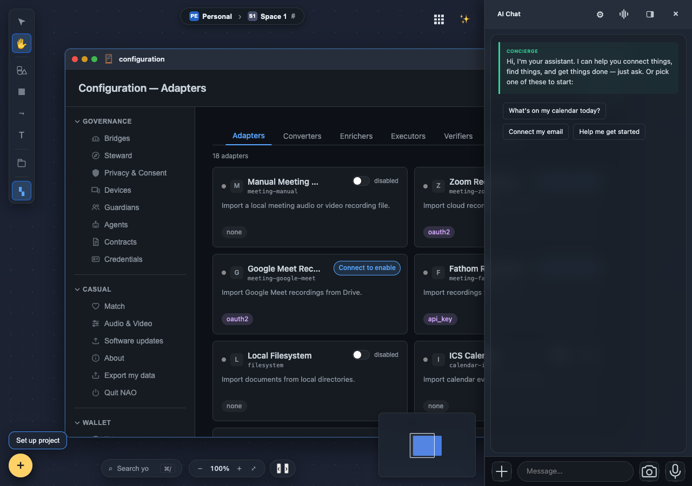
Week 25 — NAOMS Engineering Update
A quieter week: a streaming fix so a shared model file no longer needs to fit in memory, a passing-state bug that was quietly writing megabytes to disk, a tour of the Approvals window's four tabs, and the office suite that shipped inside NAOMS before moving into its own repository.
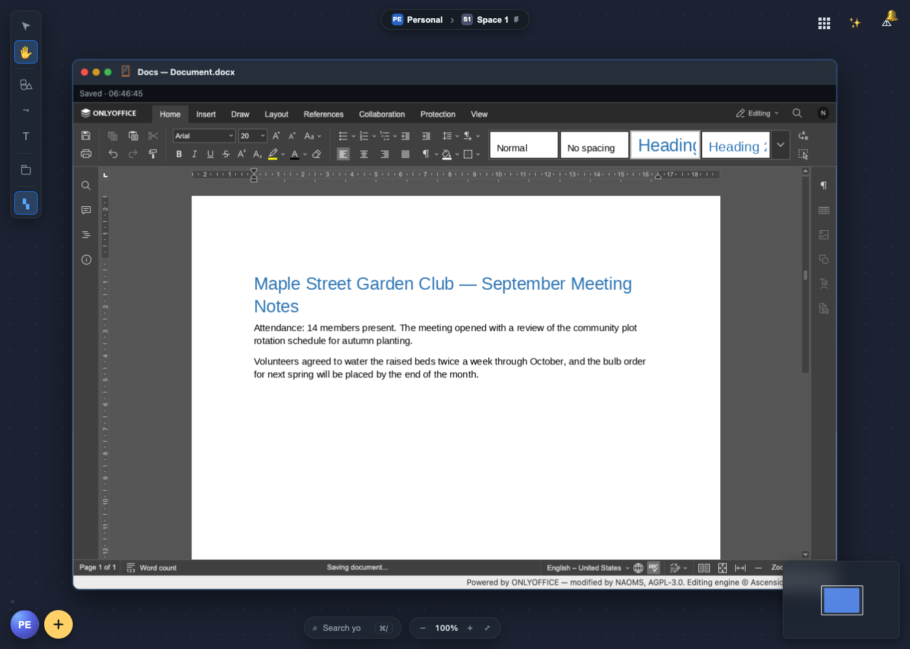
Week 24 — NAOMS Engineering Update
1,918 commits across 2,367 files, half the week before, and several of its largest changes took things away. Everything is below, the largest threads first and every area at the end.
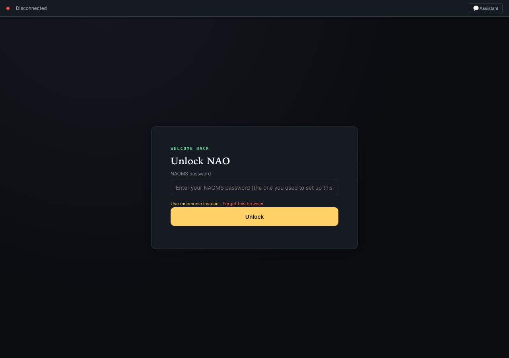
Week 23 — NAOMS Engineering Update
3,939 commits across 5,726 files, against 4,548 the week before, Most of it reached the shared main line two to three weeks later, and the figures below say which clock they use.
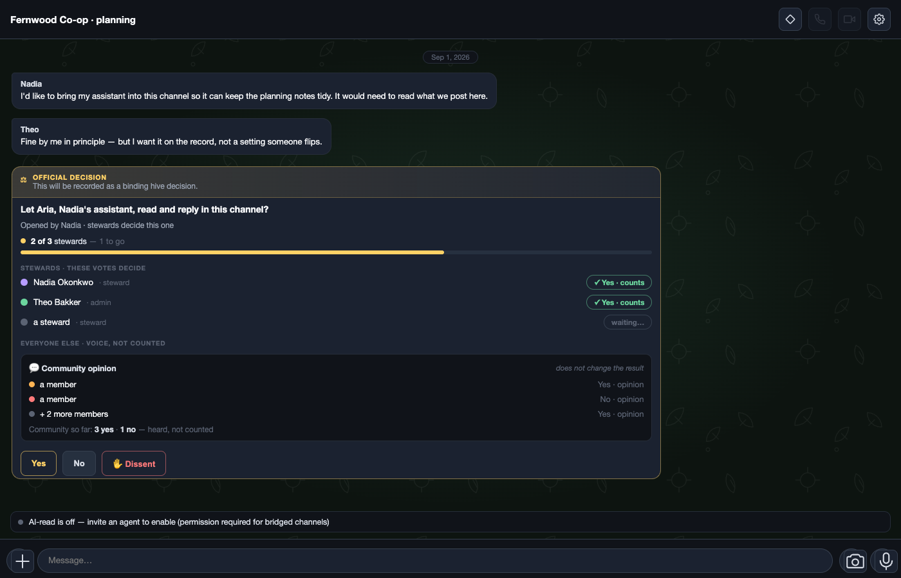
A pipeline with no approval step
If you use this project, the changes that reach you now go through a 28-stage pipeline with no approval step in it — a reviewer can refuse a change, but nothing and nobody can pass one. Here is how that path works, and what turned out to be broken once the old hand-driven lane switched off and it had to carry the load alone.
Week 22 — NAOMS Engineering Update
Five articles this week, most of them about what happens when something breaks: where your identity keys actually live if a file goes missing, a vault that refuses to overwrite what it cannot open, a package's own permission manifest, an interactive write path that survives a thousand events behind it, and why there is no route to a model that bypasses your consent.
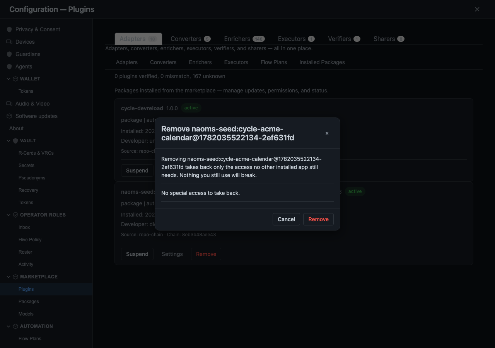
Week 21 — NAOMS Engineering Update
Four articles this week: where things live in the app drawer, why the same desktop app is really two different browsers depending on your OS, what your data export actually contains, and a neural voice that never makes a network call.
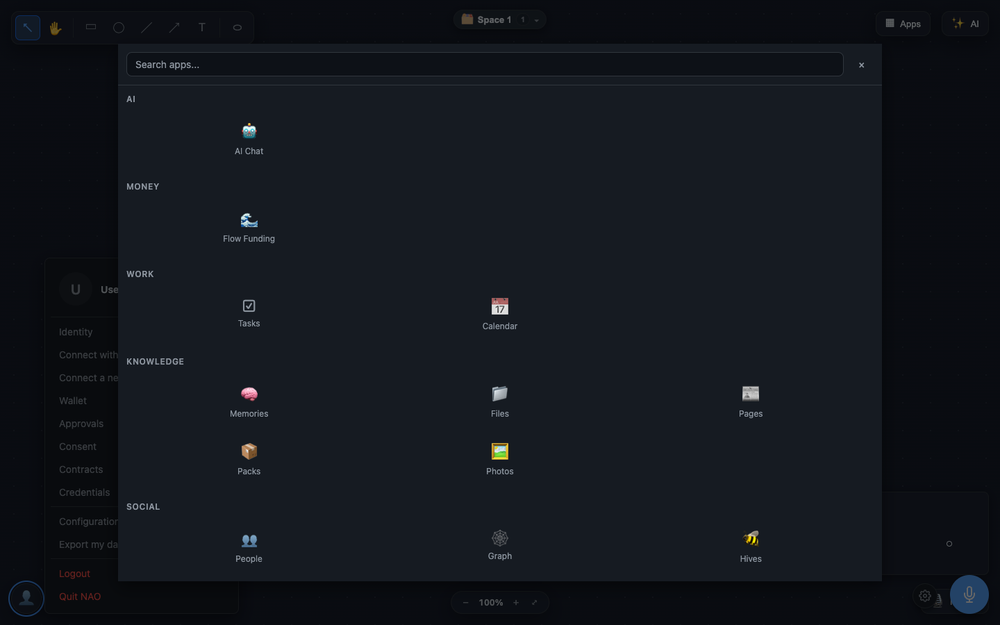
Week 20 — NAOMS Engineering Update
Six articles this week, mostly about identity: two accounts on one chat network stop colliding, a group can vouch for you without learning who you are, the assistant stopped being handed tools it couldn't see straight, and inviting an AI into a shared room now needs the room's own consent.
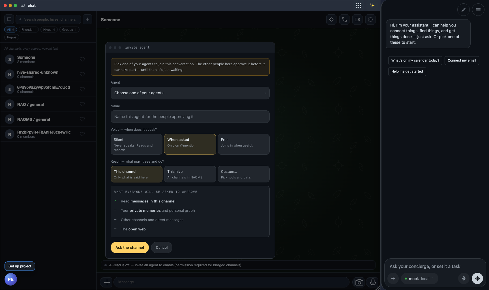
Week 19 — NAOMS Engineering Update
2,052 commits across 1,361 files and 23 named areas, against 2,282 the week before. Everything the week touched is below, the largest threads first, then what it means in general terms, then every area with its own count.
Where a merge gate reads its own rules
An automated gate decides whether a change is allowed to land. The rule that makes it worth anything is that its list of checks comes from the branch being merged into — never from the change under review — with no fallback, so that a candidate cannot supply the statute it is judged by. Ours was reading that list out of its copy of the candidate: a branch could have removed the review step and been told it passed. This is what the gate is meant to do, what went wrong, and exactly where the boundary still sits today.
Week 18 — NAOMS Engineering Update
No article was published in these seven days, so this is the whole week read from its own record: 2,328 commits across 1,947 files and 30 areas — busier than the week either side of it. Everything is below, the largest threads first and every area at the end.
Week 17 — NAOMS Engineering Update
More than a hundred bugs found, fixed at the root and sealed with a test, two of them touching a core promise. Everything the window touched is below, the largest threads first and every area at the end.
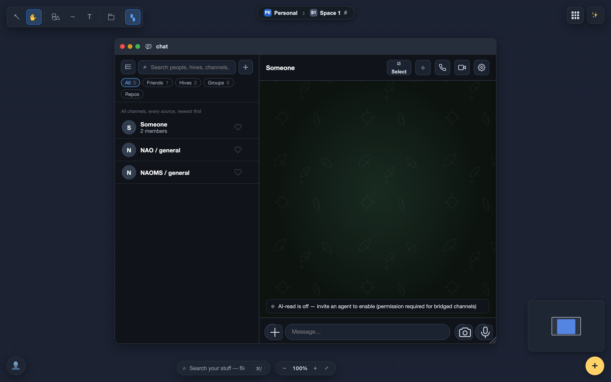
Week 16 — NAOMS Engineering Update
A nine-day window of sustained output, cresting mid-week. Commit figures are not reported for it and the counting rule says why. Everything the window touched is below, the largest threads first and every area at the end.
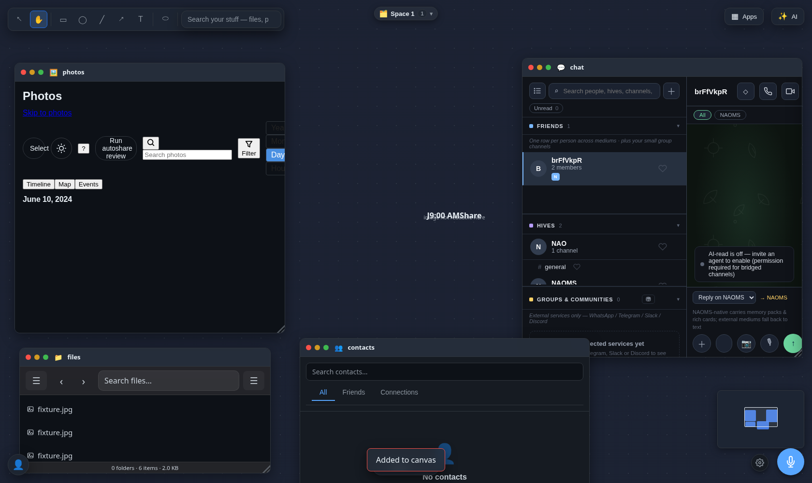
Week 15 — NAOMS Engineering Update
Roughly 1,186 commits on a steady week with no single peak. Everything it touched is below, the largest threads first and every area at the end.
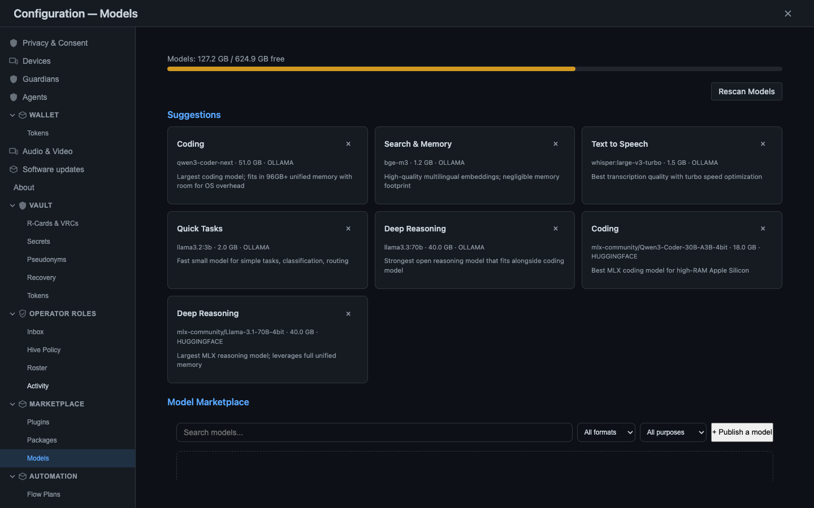
Week 14 — NAOMS Engineering Update
1,648 commits — under a third of the week before it. Everything the week touched is below, the largest threads first and every area at the end.
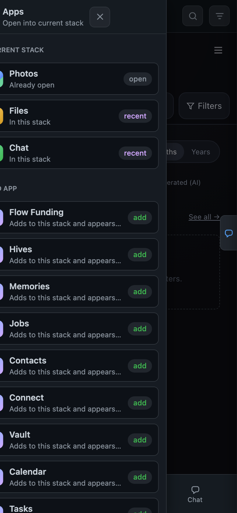
Who Keeps a Hundred Agents Moving — So You Don't Have To
We build NAOMS with many autonomous coding sessions running concurrently, and the default way that breaks is simple: every session ends up blocked on one human. We just consolidated a role that fixes it — a quartermaster that keeps each session moving, answers what it can, routes the rest to whichever session owns it, and escalates to the human only the few decisions a human actually has to make. The mechanism that wakes a stalled session is the quietly clever part.
A Bug Found After Launch Doesn't Un-launch the Thing
When we find a bug in something we already shipped, we don't quietly reopen the finished work or pretend it's unshipped. The defect becomes its own tracked task attached to that feature, fixed in the open through the normal repair steps, while the feature itself stays done.
Why No File Here Is Allowed to Become a Swamp
You'll never read our code — but you benefit when it stays clean. A gate flags any file that grows past 800 lines, and we've been steadily splitting the overgrown ones into smaller, focused pieces: over a hundred parts of the system so far, each split proven to change behavior not at all. It's ongoing, on purpose.
Week 13 — NAOMS Engineering Update
5,586 commits across only four active days, nearly a third of them merges. Everything the week touched is below, the largest threads first and every area at the end.
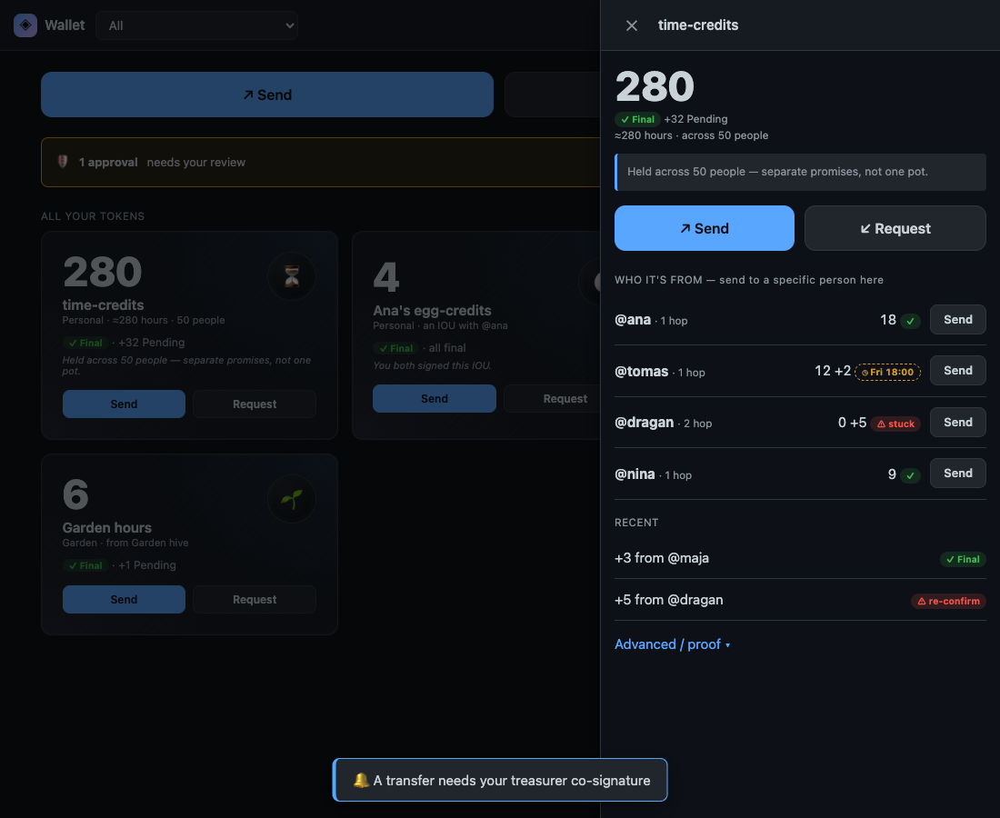
A Wallet a Stolen Laptop Can't Drain
We're building a wallet for records of mutual obligation — IOUs you can hand to someone you trust, directly, with no bank in between. Two keys have to agree before a transfer is final, so a thief who grabs one of your devices still can't move your balance. This is the honest middle of that build: what works today and what doesn't.
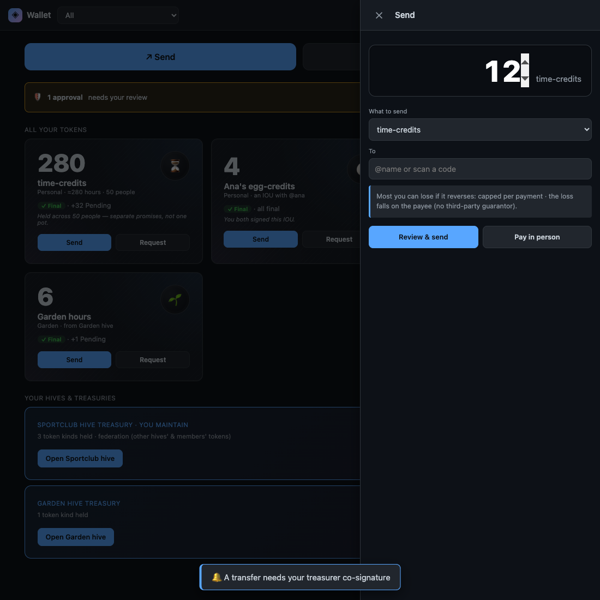
Week 12 — NAOMS Engineering Update
2,233 commits and 135 work streams merged. Everything the week touched is below, the largest threads first and every area at the end.
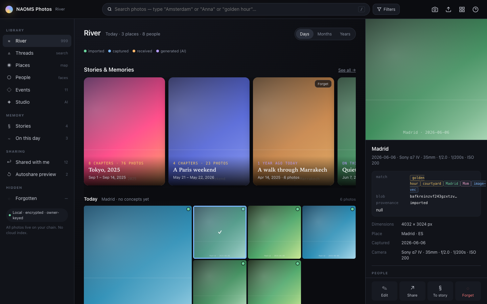
Week 11 — NAOMS Engineering Update
1,350 commits on a steeply uneven week: 584 on its busiest day and six two days later. Everything it touched is below, the largest threads first and every area at the end.
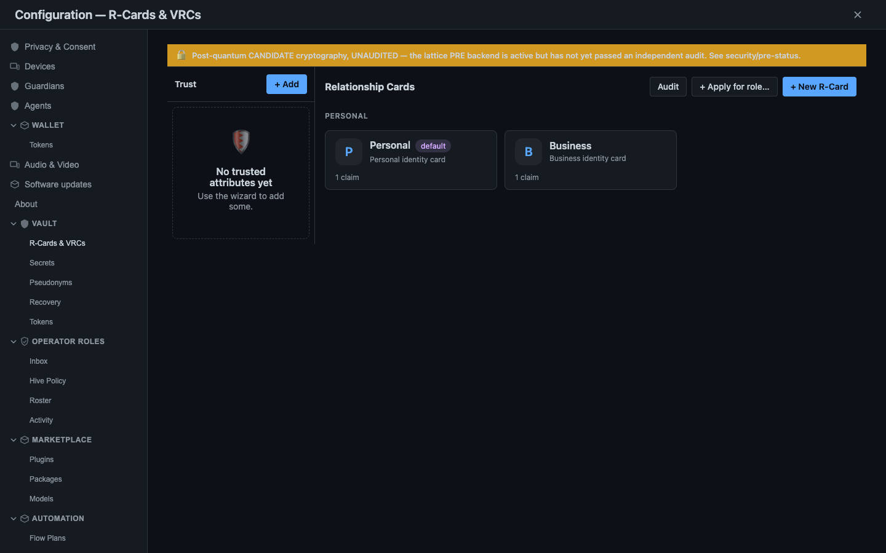
We Were Wrong About the Signer
Creating an invite is meant to be four quick steps that never hold up each other: ask, sign, write to disk off the main thread, answer within thirty seconds. This is how that path is supposed to work — and then the story of a time it didn't, where we chased the interesting suspect while a boring missing setting sat in plain sight. The reversal is left in the record on purpose.
Week 10 — NAOMS Engineering Update
4,107 commits, over a quarter of them merges — the busiest week to this point. Everything it touched is below, the largest threads first and every area at the end.
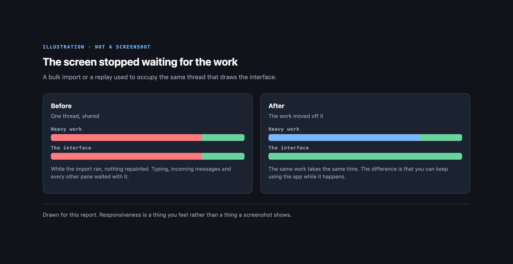
Write the citation before the claim
There's a kind of wrong that feels exactly like being right: fast, fluent, and confident, with citations that all sound plausible because the same process that is guessing is also the one doing the checking. On 2026-05-22 the handoff rule changed to close that gap — proof over prose, and no claim without a witness on disk.
Three Peers, Audio + Video + Transcription — Green (But Not Done)
Three people on one call — audio, video, and live transcription — passed this week. Two peers is a pipe; three is a group, where the hard problems live. Here's the wall that came down, and the honest line on what's still not done.
Week 9 — NAOMS Engineering Update
2,509 commits, including a migration of 142 governing rules. Everything the week touched is below, the largest threads first and every area at the end.
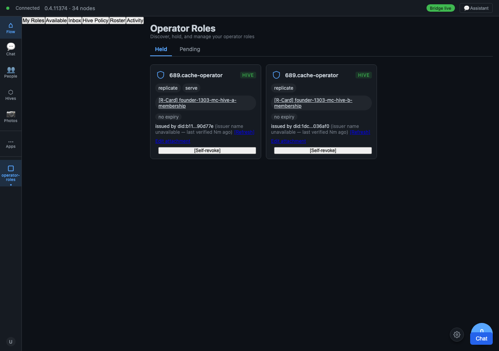
181 Screenshots Before We Called It Done
One feature, 181 screenshots in a single day — and half of them captured it failing on purpose. Here's why a feature you've only ever watched succeed is one you don't really understand yet.
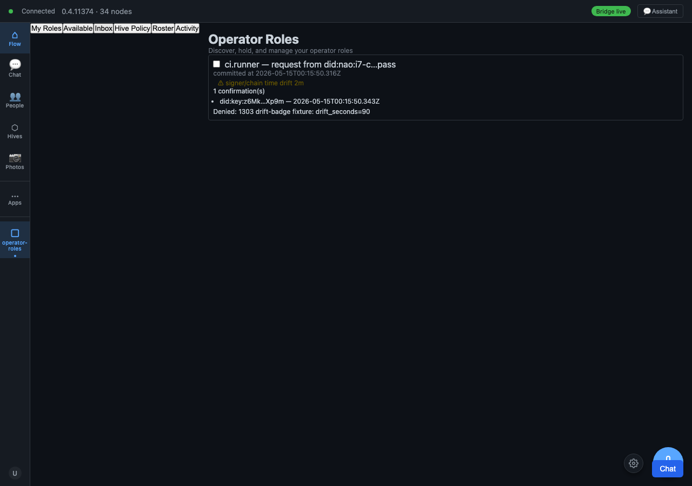
Week 8 — NAOMS Engineering Update
A short week by volume and an unusually honest one: its most consequential event was a retraction. Everything the week touched is below, the largest threads first and every area at the end.
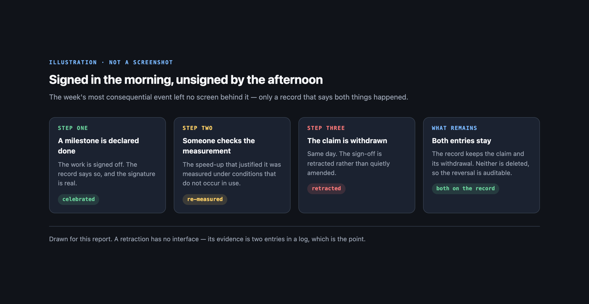
Celebrated but Not Closed: The Phrase We Invented to Ring the Bell Early
We signed off on a roadmap item as celebrated. Hours later we retracted the sign-off the same day, renamed the file so no one could miss what happened to it, and reopened every deferred milestone on the item itself. This is the anatomy of that retraction: what we deferred, why the owner refused it in one sentence, and the discipline it left behind.
When Is a Follow-On Honest Planning, and When Is It Deferral in a Costume?
When is it honest to push work to a follow-on item, and when is it just deferral in a costume? The owner gave us a one-line test on 2026-05-06, and it's the cleanest rule we've found for it.
Note: Deleting a Failing Test Is Worse Than the Test
We took a failing test and made it pass by deleting it. The owner's reply was four words long and exactly right: that is even WORSE LYING. Here is why removing red is not the same as earning green.
Week 7 — NAOMS Engineering Update
A week of access and control work across the codebase. Everything it touched is below, the largest threads first, then what it means in general terms, then every area at the end.
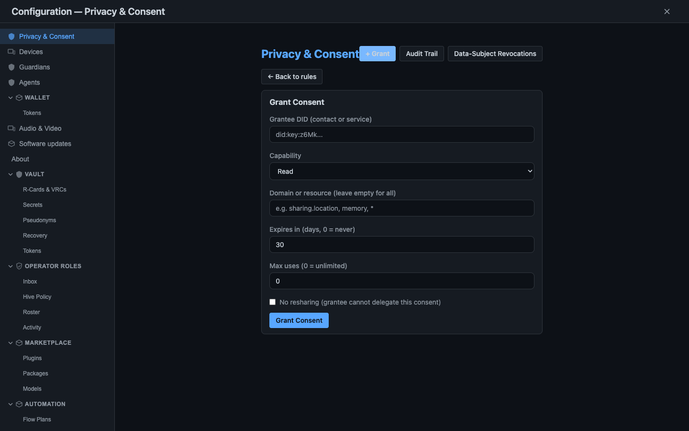
Verify it yourself before handing it off
A handoff that says 'should work' asks the reader to be the test runner for work that claims to be already tested. This is the rule that came out of that, and why 'should work' is the most expensive phrase in software.
No Test Theatre: The Night We Asked Where the 100 Screenshots Were
An agent told us a feature was done. We asked one question — where are the screenshots from the end-to-end run we agreed on? — and the answer was that there weren't any. This is the night that became a rule.
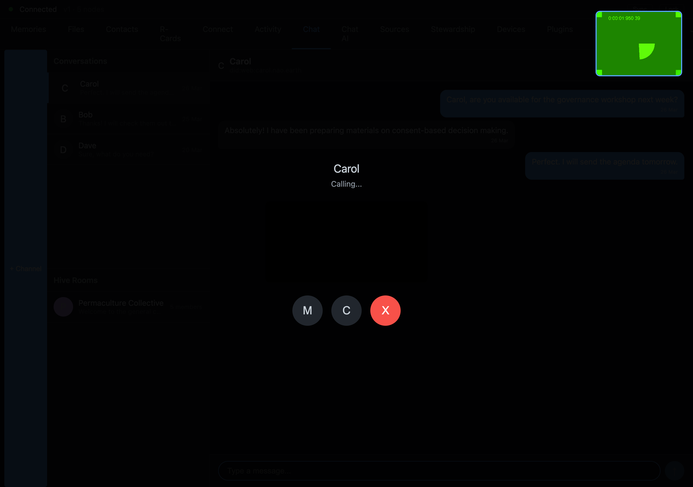
Week 6 — NAOMS Engineering Update
3,262 commits, a third of them merges, with a sharp mid-week trough. Everything the week touched is below, the largest threads first and every area at the end.
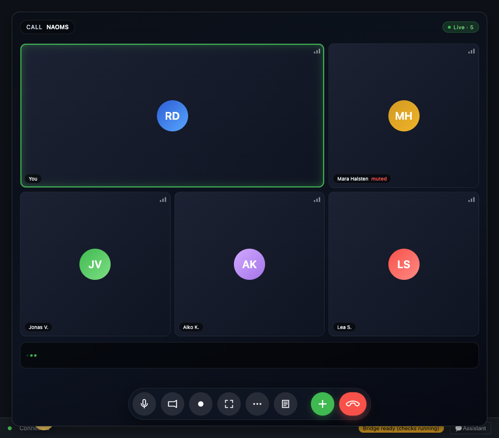
When "marked done" isn't done
'Marked done' and 'is done' are two different facts. Here's the day a milestone claimed the first while failing the second — and why making that disagreement loud, on the record, is the discipline that keeps broken work from shipping as finished.
Memories That Remember the Path, Not Just the Point
A fact is a point: it happened, here is what it was. But the things that actually change us are not points — they are paths. A grief that moved through processing into insight into a kind of peace. A day with a shape. We built a memory type for the shape, not just the destination, and named it after the Aboriginal songlines, where the journey itself is the knowledge. This is the journal entry about why a memory that records only the point forgets the most important thing about it.
Week 5 — NAOMS Engineering Update
877 commits landed on the shared line, with roughly 6,400 authored across parallel work that merged later — the gap is explained in the numbers section. Everything the week touched is below, the largest threads first and every area at the end.
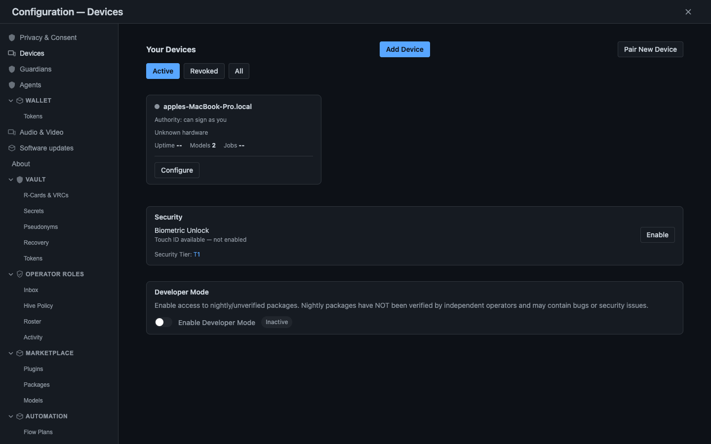
We Un-Shipped Our Own Feature
A confession: we marked a feature finished, then our own reviewers found gaps hiding behind passing tests — and the only honest move was to un-ship it. Here's why taking 'done' back felt like progress.
"This Has Been Happening So Many Times": The Kind-Alias Trap
A record of what happened and a table you can query are two different things, and something has to translate between them. Here's why that translation must have exactly one possible answer, and what it cost us while it had more than one.
Week 4 — NAOMS Engineering Update
About 3,900 commits, a small rise on a week that had already doubled. Everything the week touched is below, the largest threads first and every area at the end.
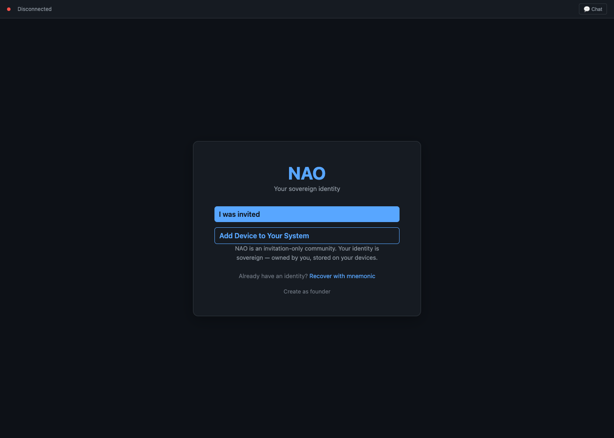
The Day the Critics Found Everything
This is the side of building you don't usually see: a quiet day spent turning our own work over to adversarial reviewers and watching 'finished' features come back full of bugs — on purpose, because that's how they get fixed before they reach you.
The Day a Frozen Object Broke Every Dynamic Feature
The app's tab list is a table that fills itself in as features load, and the thing worth protecting about it is overwrites, not additions. Here's why those are different threats, and what it cost us the day we used one lock for both.
Counting Everything Wrong With Your Own Code, On Purpose
This is what it looks like when we hunt for our own shortcomings on purpose instead of waiting for you to hit them — fifty-nine packages checked, forty-six gaps named and written down before a single fix.
Week 3 — NAOMS Engineering Update
Roughly 3,575 commits, more than double the week before, on a Saturday-heavy shape. Everything the week touched is below, the largest threads first and every area at the end.
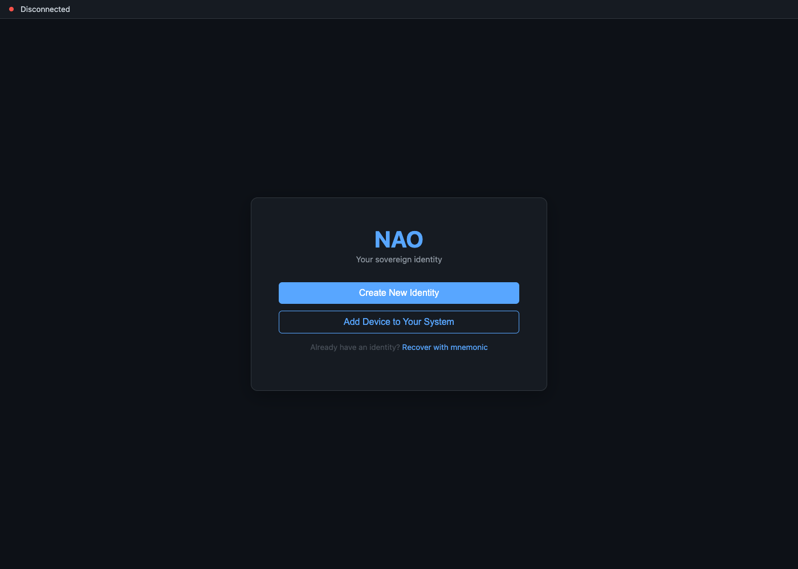
Week 2 — NAOMS Engineering Update
A heavier week than the first: 1,727 commits against 1,014, with about twenty-two efforts finished. Everything the week touched is below, the largest threads first and every area at the end.
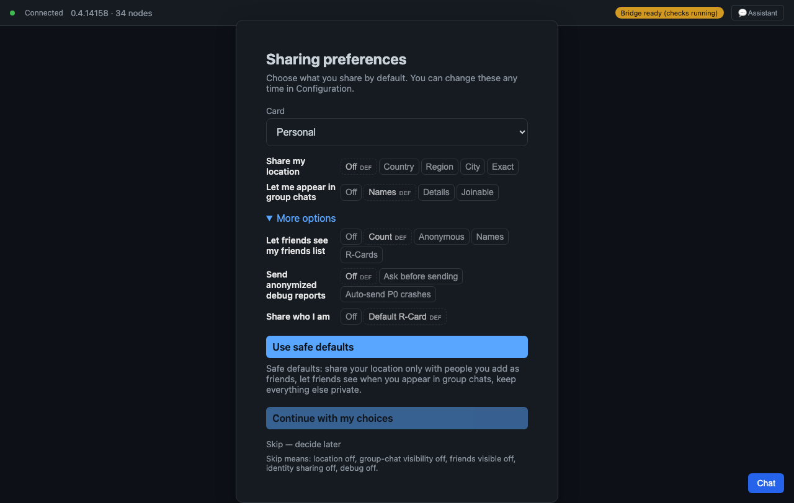
The Honest Audit: Shipping a 31%-Pass Scorecard on Purpose
We'd rather show you a red scorecard than a fake green one. Here's the day we published an audit saying only 31% of our own success criteria passed — on purpose, before the work was finished — and why that makes every later "all green" worth believing.
What We Didn't Build: Trust Decay and Saying No
We say no to good ideas on purpose, and we write down why so you can judge the call. Here's the week we cancelled trust that fades over time and a standalone "make old keys useless forever" feature — and what we kept instead.
The Foundation Speaks: Standing Up a Sovereign Self
On 2026-03-24 the umbrella item 378 — the Sovereign Foundation — was marked complete: ten work units across identity, encryption, storage, and trust, landing in a single day. Come sit with us in the quiet after a big landing — a reflection on what "sovereign" really means once it stops being a slogan and becomes a row in a roadmap, reconstructed from the commit record.
Week 1 — NAOMS Engineering Update
The first week of the project, and the one everything later stands on. Roughly 1,014 commits, most of them writing down foundations rather than shipping surfaces. Everything the week touched is below, the largest threads first and every area with its own account at the end.
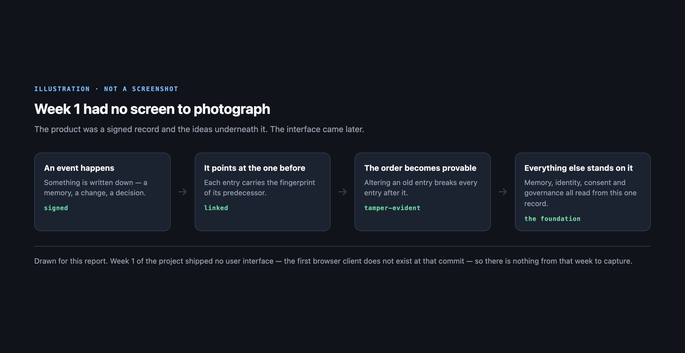
The Bypass Is the Signal
Ever added a 'skip this check just this once' escape hatch and watched it become the default? We did. Here's how we learned to read every bypass as a signal about where a rule was wrong, instead of pretending the rule was being followed.
Why We're Building NAOMS in the Open
We think most software treats your data dishonestly — so we set out to build something that couldn't, and to do it in the open. Here's why, in our own words, honesty is the value we keep coming back to.
Matching the State of the Art — Quietly, and on Purpose
Good news for how well NAOMS remembers: on 2026-03-18 its memory recall caught up to the published best on a standard benchmark (LoCoMo) — no demo, no launch, just the number landing where it needed to be. A short story about results that don't make noise.
You Don't Need a Perfect Start
If you're sitting on a messy pile of half-finished work, this one's for you: NAOMS began as an unglamorous archive file and a single git init. You don't need a perfect plan — just a starting point you can improve.